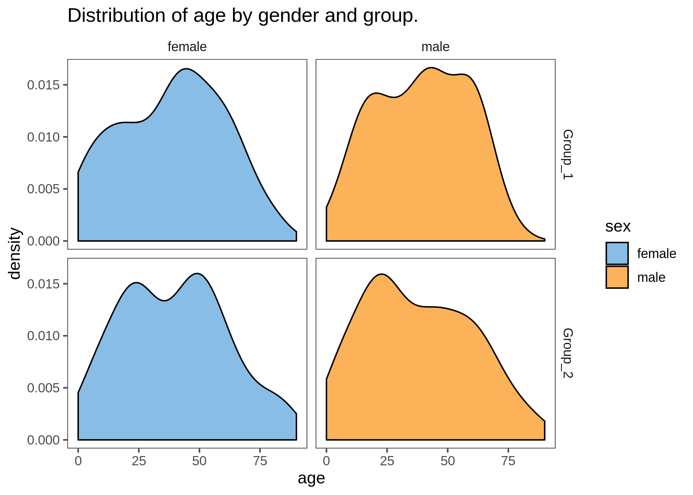
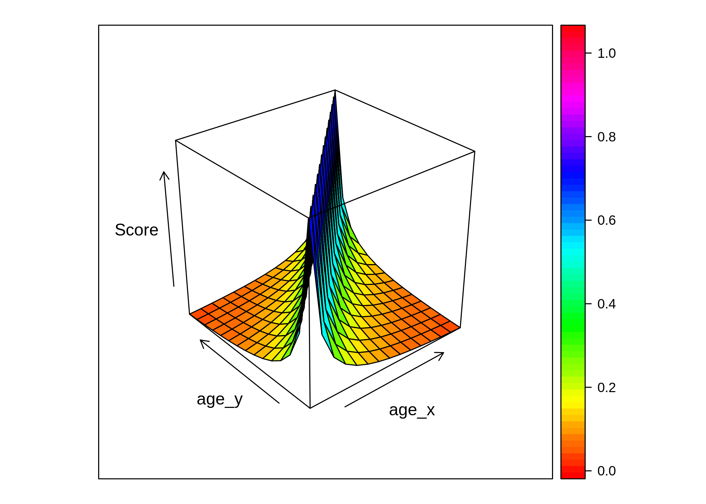
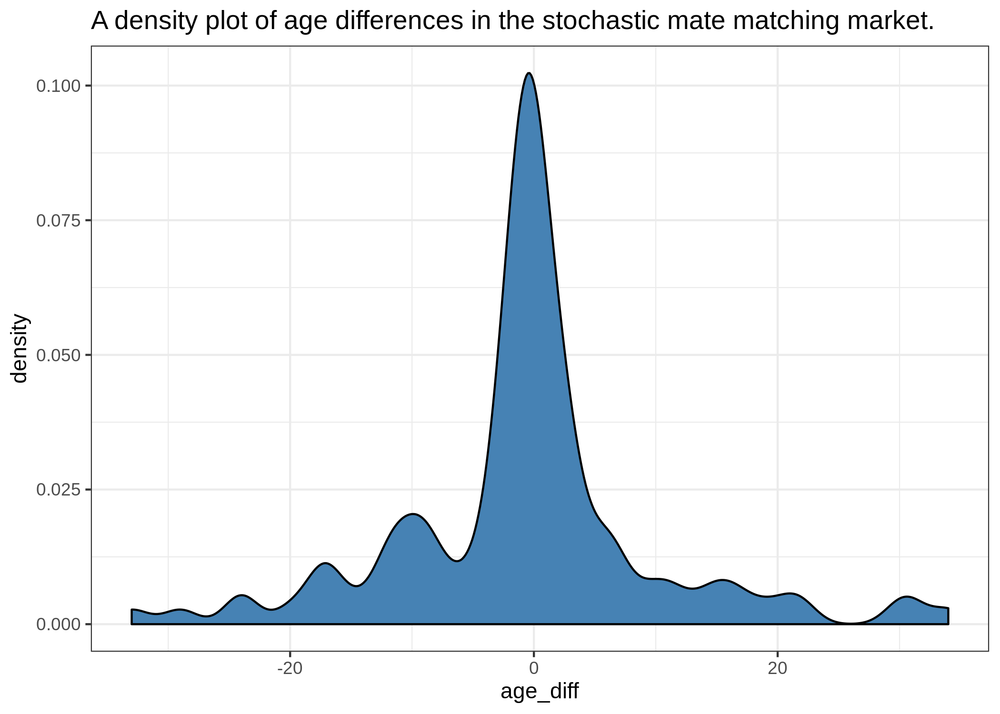
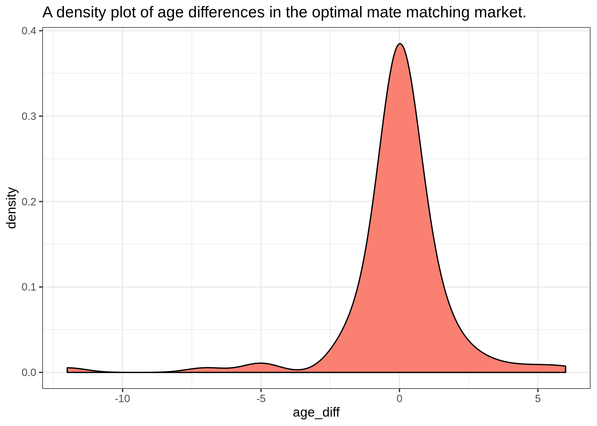

# To install a package use `install.packages('package-name')`
library(dymium)
#> + dymiumCore 0.0.10 Date: 2019-12-02
#> R: 3.6.1
#> OS: Ubuntu 16.04.6 LTS
#> GUI: X11
#>
#>
library(data.table)
library(R6)
library(dplyr)
#>
#> Attaching package: 'dplyr'
#> The following objects are masked from 'package:data.table':
#>
#> between, first, last
#> The following objects are masked from 'package:stats':
#>
#> filter, lag
#> The following objects are masked from 'package:base':
#>
#> intersect, setdiff, setequal, union
library(ggplot2)
library(gganimate)
#>
#> Attaching package: 'gganimate'
#> The following object is masked from 'package:dymiumCore':
#>
#> Transition
set.seed(728)
knitr::opts_chunk$set(echo = TRUE)# Import individual and household data
ind_data <- toy_individuals
# Create an Individual object with attribute data
Ind <- Individual$new(.data = ind_data, id_col = "pid")
# show data
Ind$get_data()
#> pid hid age sex marital_status partner_id father_id mother_id
#> 1: 1 1 71 male never married NA NA NA
#> 2: 2 2 31 female never married NA NA NA
#> 3: 3 2 29 female never married NA NA NA
#> 4: 4 3 38 male married 5 NA NA
#> 5: 5 3 25 female married 4 NA NA
#> ---
#> 369: 369 143 73 male married 368 NA NA
#> 370: 370 144 49 female married 371 NA NA
#> 371: 371 144 59 male married 370 NA NA
#> 372: 372 144 15 male never married NA 371 370
#> 373: 373 144 17 male never married NA 371 370All agents will be randomly assigned a group number to them this is to create sub markets. Sub markets are defined such that only agents within the same sub market can interact with each other. This maybe used to mimic agents’ social network, geographical boundary, etc.
n_groups <- 2
# randomly assign group numbers to all agents
Ind$get_data(copy = FALSE)[, group := sample(paste0("Group_", 1:n_groups), size = .N, replace = TRUE)]Ind$get_data() %>%
ggplot(data = ., aes(x = age, fill = sex)) +
geom_density() +
facet_grid(group ~ sex) +
ggthemes::scale_fill_few() +
ggthemes::theme_few(base_size = 12) +
labs(title = "Distribution of age by gender and group.")
New matching market can be extended from the available matching market classes which are MatchingMarketStochastic and MatchingMarketOptimal. In every matching problems there are two sides of the market, we call them A and B. Scoring functions need to be defined for each side of the market manually by implementing matching_score_A and matching_score_B. matching_score_A represent how agents in one side of the market evaluate the candidates of the opposite side, and vice versa for matching_score_B. The user is expected to change the function but the three main argument for both the scoring functions must remain the same. self$matching_problem allows the function to access the variables given when the class was created.
The rule that all agents follow is simple, they want to find a match that has the least age difference, as expressed in the scoring functions matching_score_A and matching_score_B.
\[ MatchingScore_x = \frac{1}{1+|age_x - age_y|}\]
require(lattice)
#> Loading required package: lattice
x <- seq(-10, 10, length.out = 15)
y <- x
f <- function(x,y) {
1 / (1 + abs(x-y))
}
z <- outer(x, y, f)
wireframe(z, drape=T, col.regions=rainbow(100), zlab = "Score", xlab = "age_x", y = "age_y")
MateMatchingStochastic <- R6::R6Class(
classname = "StochasticCohabitationMarket",
inherit = MatchingMarketStochastic,
public = list(
matching_score_A = function(matching_problem = self$matching_problem,
idx_A,
idx_B) {
scores <- 1 / (1 + abs(
matching_problem$agentset_A[["age"]][idx_A] -
matching_problem$agentset_B[["age"]][idx_B]
))
},
matching_score_B = function(matching_problem = self$matching_problem,
idx_B,
idx_A) {
scores <- 1 / (1 + abs(
matching_problem$agentset_B[["age"]][idx_B] -
matching_problem$agentset_A[["age"]][idx_A]
))
}
)
)MateMatchingOptimal <- R6::R6Class(
classname = "MateMatchingOptimal",
inherit = MatchingMarketOptimal,
public = list(
matching_score_A = function(matching_problem = self$matching_problem, idx_A, idx_B) {
outer(X = matching_problem$agentset_B[["age"]][idx_B], # reviewers, rows
Y = matching_problem$agentset_A[["age"]][idx_A], # proposers, columns
function(x, y) {
1 / (1 + abs(x - y))
})
},
matching_score_B = function(matching_problem = self$matching_problem, idx_B, idx_A) {
outer(X = matching_problem$agentset_A[["age"]][idx_A], # reviewers, rows
Y = matching_problem$agentset_B[["age"]][idx_B], # proposers, columns
function(x, y) {
1 / (1 + abs(x - y))
})
}
)
)# using dplyr's filter
agentset_A <- Ind$get_data() %>%
dplyr::filter(age > 20 & age < 60 & sex == 'male') %>%
data.table::setDT(.) # convert back to data.table
# using data.table syntax for filtering
agentset_B <- Ind$get_data() %>%
.[age %between% c(20, 60) & sex == 'female']
# define id column
id_col_A <- id_col_B <- 'pid'
# create a market object using its constructor
StochasticMatching <- MateMatchingStochastic$new(agentset_A, agentset_B, id_col_A, id_col_B, grouping_vars = c('group'))
OptimalMatching <- MateMatchingOptimal$new(agentset_A, agentset_B, id_col_A, id_col_B, grouping_vars = c('group'))stochastic_matching_result <-
StochasticMatching$simulate(n_choices = 10, # number of potential partners each agent evaluates
method = 'pweighted', # weighted probability
by_group = TRUE) # segments the whole population into by markets by their group
#> [22:12:05] INFO dymiumCore self$split_market: The matching problem is splited into 2 groups (markets) with the total of 2 sub-markets
optimal_matching_result <-
OptimalMatching$simulate(method = "one-to-one", # each agent only has one match.
one_sided = FALSE, # agents from both sides of the market have preferences towards each other
optimal_A = TRUE, # optimal for A
by_group = TRUE) # segments the whole population into by markets by their group
#> [22:12:05] INFO dymiumCore self$split_market: The matching problem is splited into 2 groups (markets) with the total of 2 sub-marketsstochastic_matching_quality <-
na.omit(stochastic_matching_result) %>%
merge(x = ., y = Ind$get_data()[, .(pid, age)], by.x = 'id_A', by.y = 'pid') %>%
merge(x = ., y = Ind$get_data()[, .(pid, age)], by.x = 'id_B', by.y = 'pid', suffixes = c('_A', '_B')) %>%
.[, age_diff := age_A - age_B]
ggplot(data = stochastic_matching_quality, aes(age_diff)) +
geom_density(color = "black", fill = "steelblue") +
theme_bw() +
labs(title = "A density plot of age differences in the stochastic mate matching market.")
optimal_matching_quality <-
na.omit(optimal_matching_result) %>%
merge(x = ., y = Ind$get_data()[, .(pid, age)], by.x = 'id_A', by.y = 'pid') %>%
merge(x = ., y = Ind$get_data()[, .(pid, age)], by.x = 'id_B', by.y = 'pid', suffixes = c('_A', '_B')) %>%
.[, age_diff := age_A - age_B]
ggplot(data = optimal_matching_quality, aes(age_diff)) +
geom_density(color = "black", fill = "salmon") +
theme_bw() +
labs(title = "A density plot of age differences in the optimal mate matching market.")